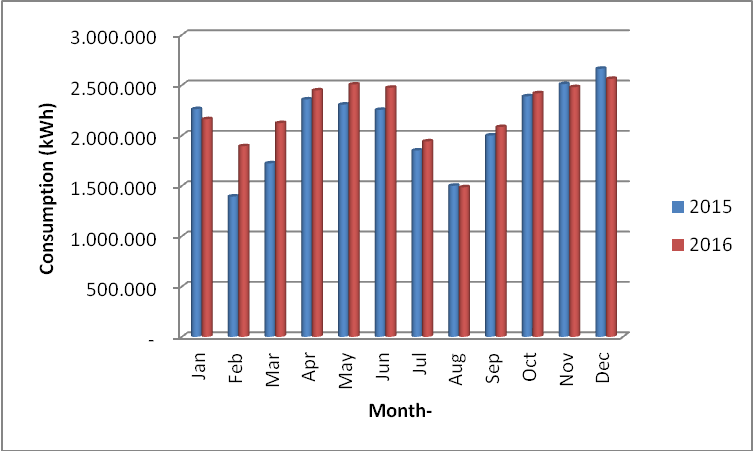
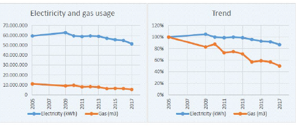

| Electricity Usage — UI Depok Campus (Universitas Indonesia) |
|---|
|
 |
| Electricity & Gas Usage — Wageningen University (Netherlands) |
|---|
|
 |
(Please describe the electricity usage per year on your campus. The following is an example of the description. You can describe more related items if needed.)
The total electricity usage of Wageningen Campus in 2017 is 40,228,415 kWh. On the main campus area of Wageningen University & Research in Wageningen, electricity is used for lighting, cooling, heating, and laboratory appliances. For more information, see the Energy paragraph of the WUR 2017 Annual Environmental Report.